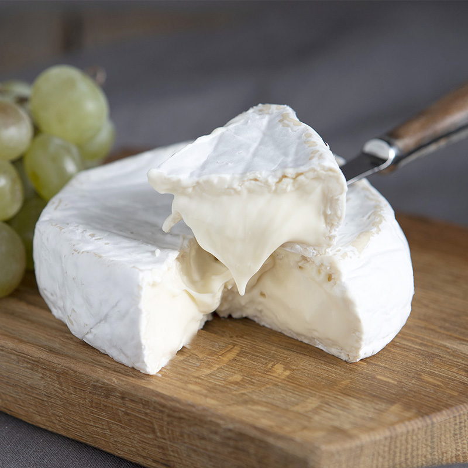
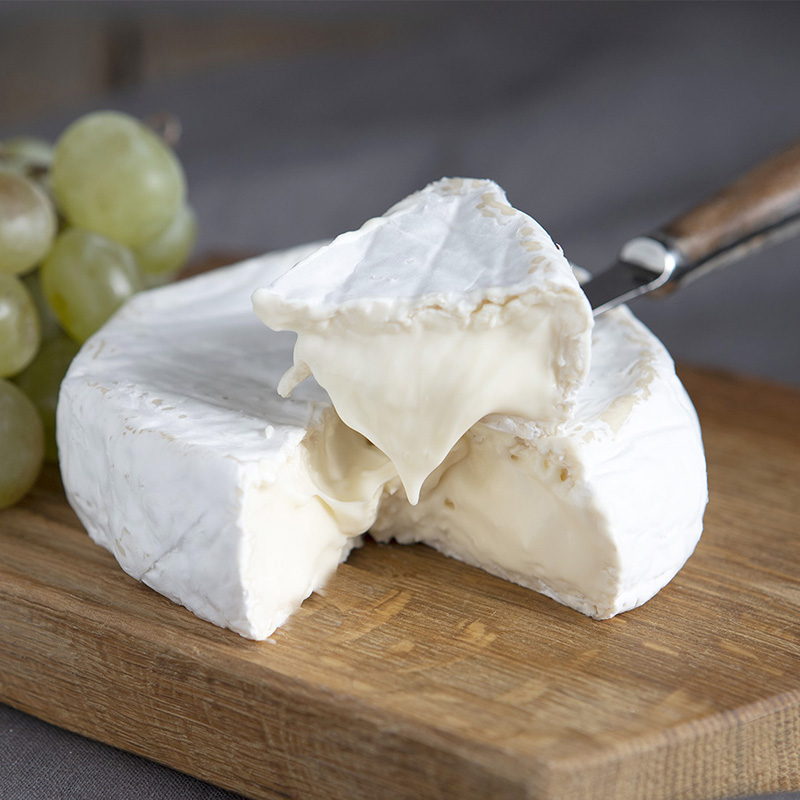
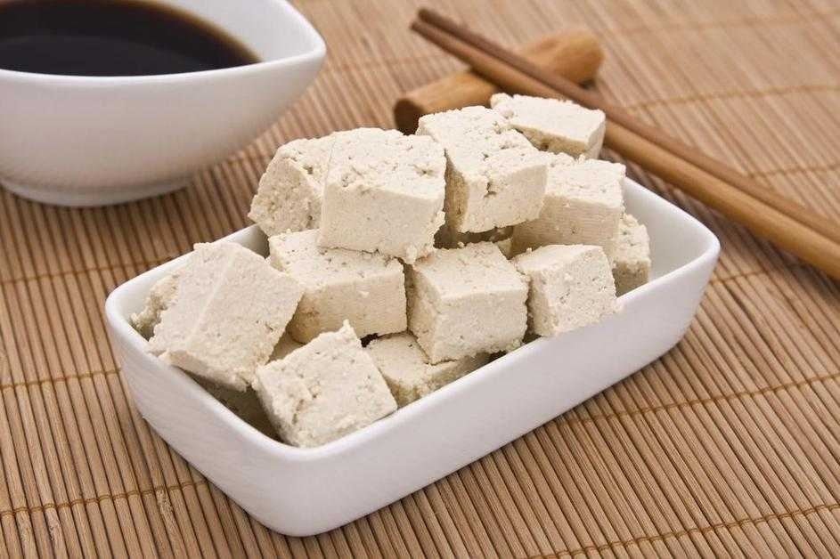
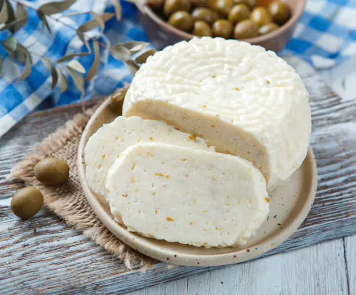
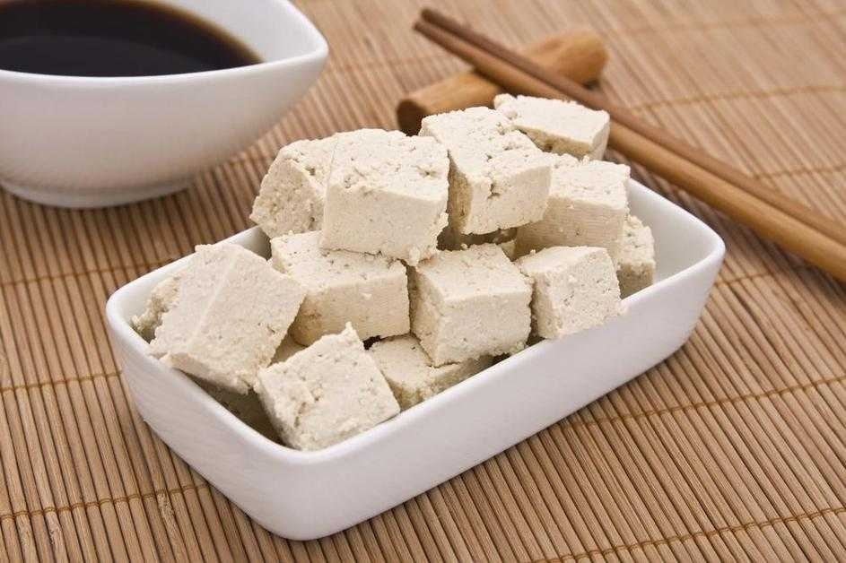
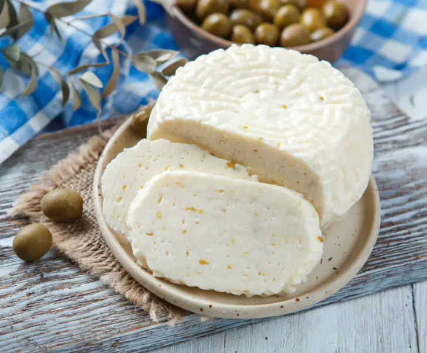

.webp) 

.webp)
.webp) 



Твёрдые сыры. Эти сорта вызревают дольше, до 36 месяцев.
Благодаря этому сыр получается плотным, упругим, иногда с
белыми вкраплениями кальция.
Мягкие сыры. Обычно к ним относятся сорта с плесенью: она может
быть белой или голубой. Популярные сорта с белой плесенью — бри и камамбер.
Сыры с голубой плесенью более пикантные, солёные,
с нотками орехов или землистым оттенком.
Сливочный сыр — мягкий сыр с нежным вкусом и кремовой текстурой.
Изготавливается путём сквашивания молока и сливок.
Полутвёрдые сыры. К ним относятся российский сыр, сметанковый,
костромской, гауда, швейцарский. Они вызревают от месяца до полугода,
имеют пористую структуру с дырочками разного диаметра и сливочный вкус
без пикантности.
Растительные сыры. Это альтернативный вариант
без использования молока, именно их предпочитают веганы.
Растительные сыры производят из створоженного сырья,
например сои. Самый известный из таких продуктов — тофу.
Рассольные сыры. Это безкорковые сорта, которые созревают в рассоле.
Сырное тело редко меняет свой цвет и чаще остаётся белым.
Вкус рассольного сыра может варьироваться от нейтрального до сильносолёного.